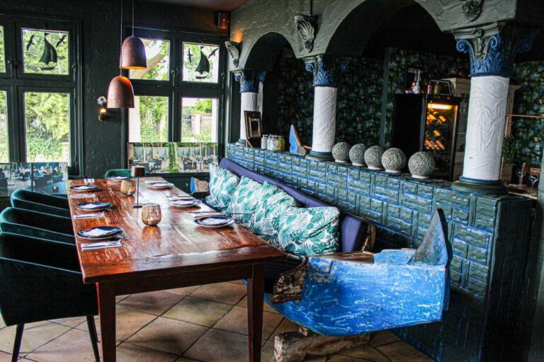
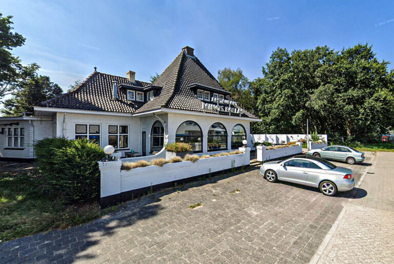
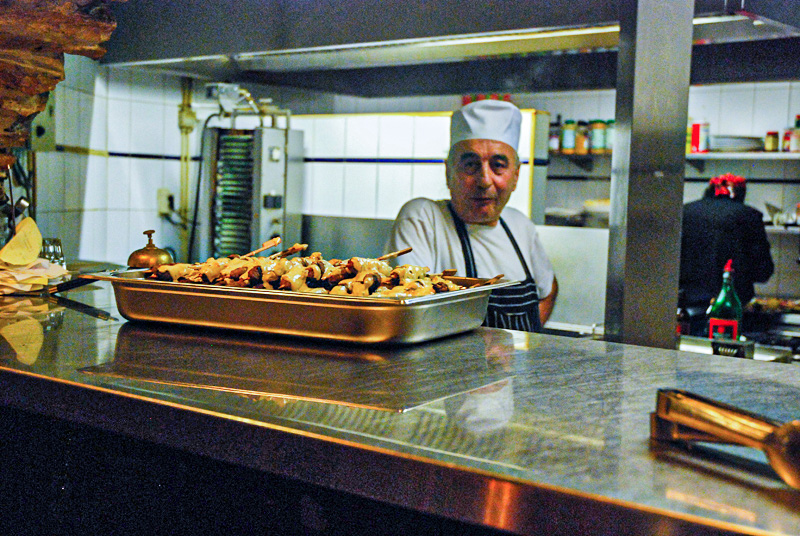
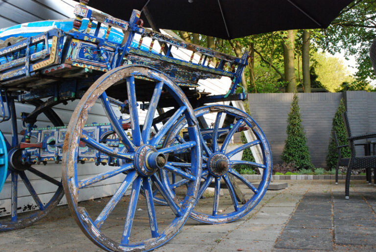
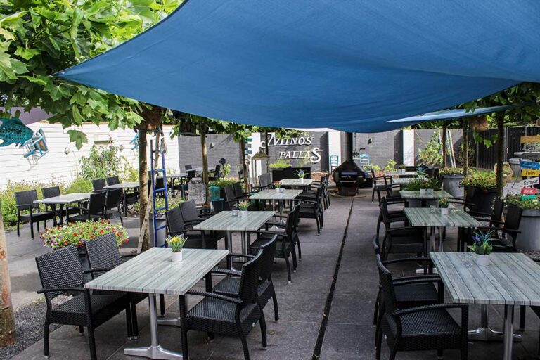
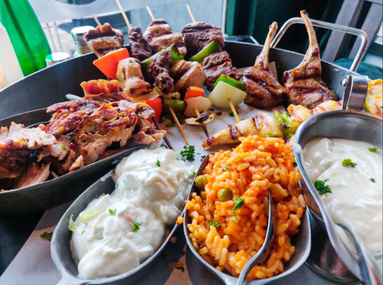
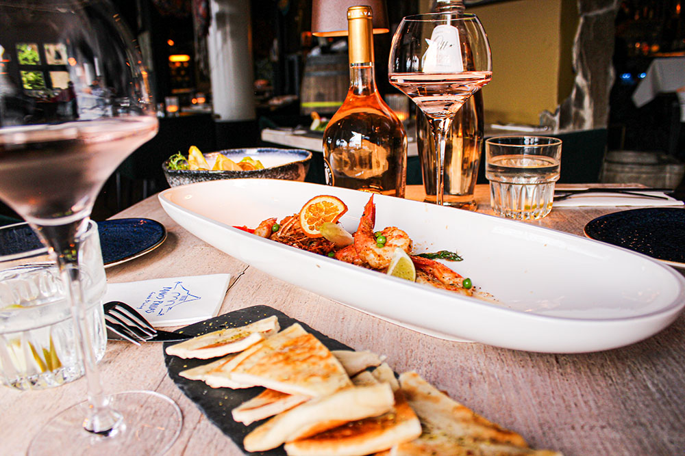
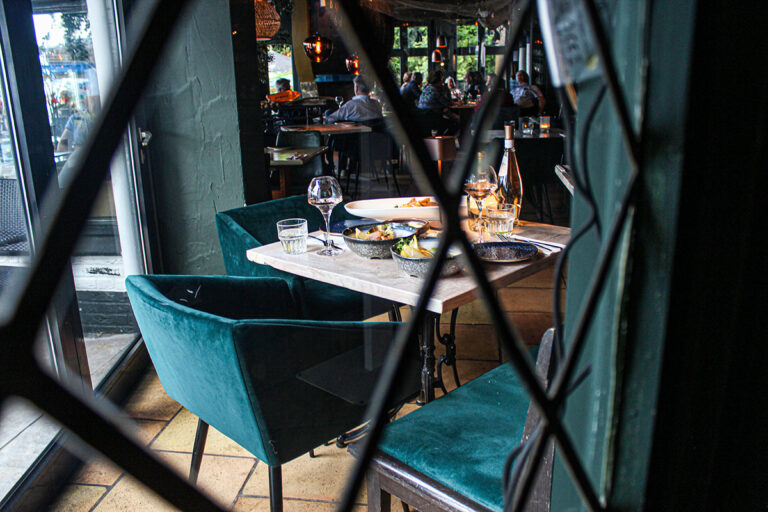
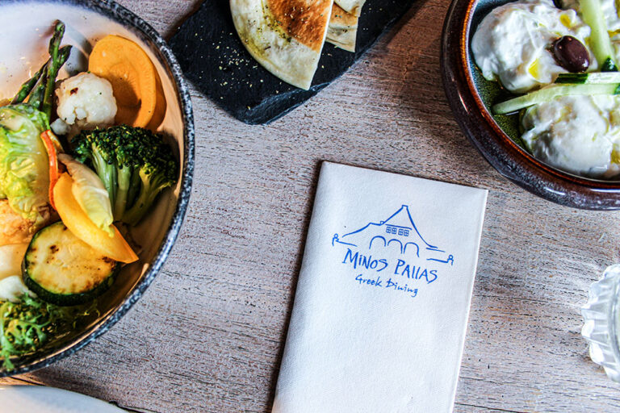
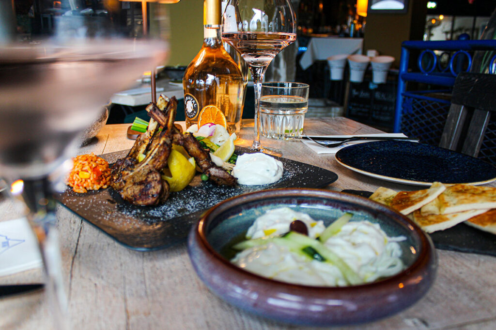

Grieks restaurant · Eindhoven
Minos Pallas
Griekse gerechten, een huiselijke sfeer en een grote, groene tuin. Al jarenlang een begrip in Eindhoven.
Welkom
Een avond Griekenland, midden in Eindhoven
Minos Pallas is door de jaren heen een begrip geworden in Eindhoven. Bij ons bestaat een avond uit niet alleen uit heerlijk eten in een huiselijke sfeer: ook de muziek brengt een authentieke sfeer met zich mee, zodat de Griekse ambiance optimaal tot z'n recht komt.
Kom dineren in het restaurant, of drink een drankje in de bar of de lounge. Neem plaats op het terras, in onze grote achtertuin, of liever binnen bij de open haard. We nemen u graag mee in onze Griekse culinaire wereld, waar smaak en gezelligheid hand in hand gaan.
- Open saladebuffet, steeds vers aangevuld
- Open haard binnen, grote tuin buiten
- Aparte rookgelegenheid
- Gratis parkeren
Wij heten u graag persoonlijk welkom,Yannis Vassiliou, Nektaria Papadimitriou & Evangelo Vassiliou



Keuken
Griekse specialiteiten, met zorg bereid
De Griekse keuken staat bekend om verse ingrediënten, en daar maakt Minos Pallas dankbaar gebruik van. We kiezen steevast voor de meest verse producten, en voor kruiden en specerijen uit Griekenland, om zowel de smaak als de sfeer zo authentiek mogelijk te houden.
U proeft bij ons traditionele Griekse smaken uit alle windstreken van Griekenland. Alles wordt bereid in onze open en eerlijke keuken: u ziet precies hoe onze Griekse koks aan het werk zijn.
Naar de menukaartGeïnspireerd op de Griekse mezedes
Proeverij Minos
Geen traditioneel à la carte, maar allerlei gerechtjes op tafel die u samen deelt, geserveerd in twee gangen. Sluit eventueel af met een dessertronde, waarbij verschillende zoetigheden op tafel komen om samen van te genieten. Laat u verleiden tot deze culinaire rondreis!
De mezedes zijn alleen per tafel of gezelschap te bestellen.
Tuin & terras
De trots van Minos Pallas
Naast de keuken zijn de tuin en het terras onze trots. In de uitgebreide, groene tuin geniet u romantisch van een hapje, een drankje of een van onze Griekse gerechten, en waant u zich even helemaal in Griekenland.
Overdag is de tuin mooi groen; 's avonds zorgen de lichten voor een gezellige, intieme sfeer.



Arrangementen & groepen
De avond gaat precies zoals u wilt
Met een (grote) groep maakt u bij ons kennis met de Griekse keuken. U kunt bijvoorbeeld een keuzemenu samenstellen en zo ook de prijs zelf in de hand houden. We denken graag mee over uw feesten en partijen.
Ook op locatie: we komen ook graag een buffet bij u serveren, bijvoorbeeld voor een feest in de buitenlucht.
Vraag naar de mogelijkhedenImpressie
Huiselijke sfeer
Maak alvast kennis met de ambiance: smaak en de bekende Griekse gezelligheid.




Reserveren
Kom Minos Pallas ervaren
Reserveren is noodzakelijk. Dat kan telefonisch, per e-mail of met het formulier hiernaast. U ontvangt altijd een bevestiging van ons.
040 - 211 86 23 info@minospallas.nuOpeningstijden
Wanneer we open zijn
| Maandag | Gesloten |
|---|---|
| Dinsdag | 16.30 - 00.00 |
| Woensdag | 16.30 - 00.00 |
| Donderdag | 16.30 - 00.00 |
| Vrijdag | 16.30 - 00.00 |
| Zaterdag | 16.30 - 00.00 |
| Zondag | 16.00 - 00.00 |
Keuken geopend tot 22.00 uur. Lunchen is mogelijk op afspraak.
Contact & route
Minos PallasGeldropseweg 440
5645 TL Eindhoven
040 - 211 86 23
info@minospallas.nu
Gratis parkeren bij het restaurant.